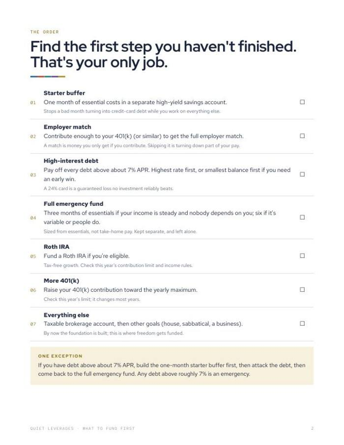
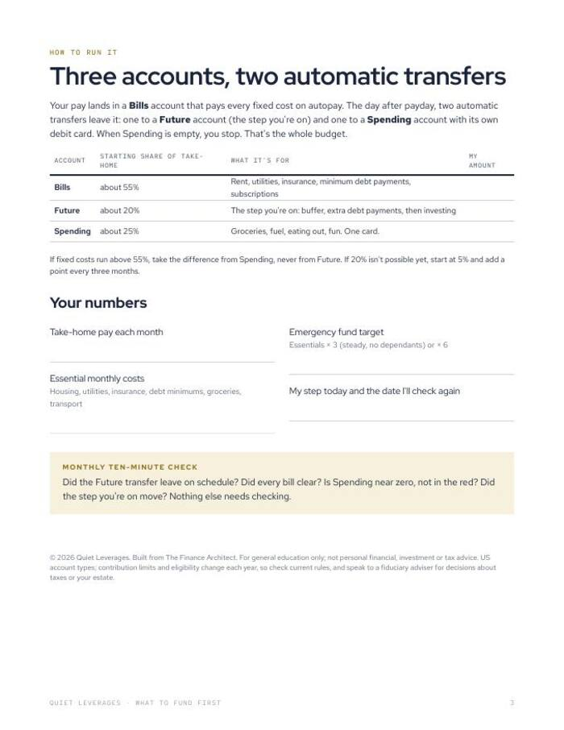

Spare money after payday, and seven goals competing for it? Fund them in this order.
Find the first step you have not finished, then set two automatic transfers for the day after payday. That is your only job.
PDF + Google Sheet. No email wall, no course. Find your step tonight.

One step at a time
Seven steps in sequence. Find the first one you have not finished and ignore the rest for now.
Two automatic transfers
The day after payday, two transfers leave your Bills account. When Spending is empty, you stop.
A sheet that finds your step
Enter your numbers and it tells you which step you are on and what to move each month.
money steps, in order
automatic transfers sized
formats: PDF and Google Sheet
of people are very confident they split spare money well across debt, savings and retirement. The problem was never knowledge. It was the order.
Vestwell, June 2026What you leave with
Your step, found
Tick off what is done. The first unticked step is the only one you work on.
The order, settled
Starter buffer, employer match, high-interest debt, emergency fund and on, in the sequence most money books agree on.
Automation, sized
Three accounts and two transfers that run without a decision each month. The Google Sheet works out what to move.
A ten-minute monthly check
Did the transfer leave on schedule? Is every bill clear? Is the step you are on moving? Nothing else needs checking.
A printable and a sheet that tells you where you are
A cover and two working pages, plus the same logic as a Google Sheet.
- Printable (PDF). Two working pages plus a cover: the seven steps in order, and the three-account setup.
- Google Sheet. Enter your numbers and it tells you which step you are on and what to move each month.
- One exception, spelled out. What to do first if you carry high-interest debt.
- Built from The Finance Architect by Quiet Leverages.


Find your step, then automate it
Find your step
Go down the seven steps and stop at the first one you have not finished.
Enter your numbers
Take-home pay, essential costs, the emergency fund target. The sheet shows the step and the monthly amount.
Set two transfers
One to a Future account for your step, one to a Spending account. Then leave them alone.
A good fit if the order is the problem
Use this if
- You have some spare money each month and no clear order for it.
- You keep going back and forth between paying debt, saving and investing.
- You want to set it up once and stop second-guessing.
Skip it if
- You want investment, tax or product recommendations. This is general education.
- You want a budget with every category tracked. This sets one order and two transfers.
- You share money with a partner and need the conversations. See The Couples Money Reset.
Why the order matters, in numbers
of US adults began 2026 feeling financial stress.
NEFE, Jan 2026of people earning $200K+ are only 'somewhat' confident they split spare money well.
Vestwell, June 2026report money dysmorphia, feeling broke despite a healthy position.
Intuit Credit Karma, via FinderWhat readers say about What to Fund First
Find your step tonight
It is free. Your only job is the first step you have not finished.
- Printable PDF: seven steps and the three-account setup
- Google Sheet that finds your step
- A monthly ten-minute check
Before you decide
Is it really free?
Yes. Gumroad lets you pay what you want, starting at $0. If it helps and you want to leave something, you can. You do not have to.
How long does it take?
The printable is a cover and two working pages, so reading it is quick. Setting up the two automatic transfers is a one-time job at your bank.
What if I have credit-card debt?
The tool covers it. If you carry debt above about 7% APR, build the one-month starter buffer first, then attack the debt, then return to the full emergency fund.
Does it only work for US accounts?
The printable names US accounts such as a 401(k) and a Roth IRA, and the contribution limits change each year. The idea of working in a fixed order still applies elsewhere, using your own equivalents.
Can I print it or use it on a tablet?
Both. Print the PDF, or fill it in on a tablet with any PDF app. The Google Sheet works in your browser.
Is this financial advice?
No. It is a planning tool and general education only. For decisions about taxes or your own situation, speak to a qualified adviser.
The next step after this one

One step. Two transfers. The day after payday.
Find the first step you have not finished and set it running.
Get the free toolFree on Gumroad. Pay what you want from $0. Instant download.